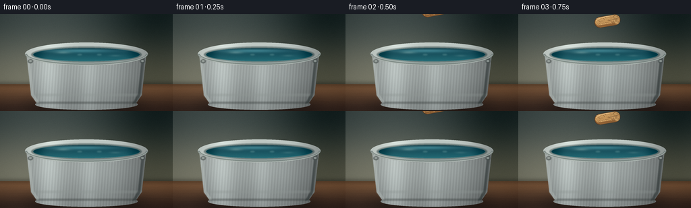
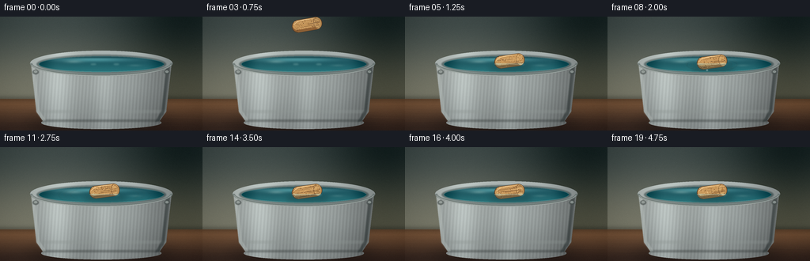
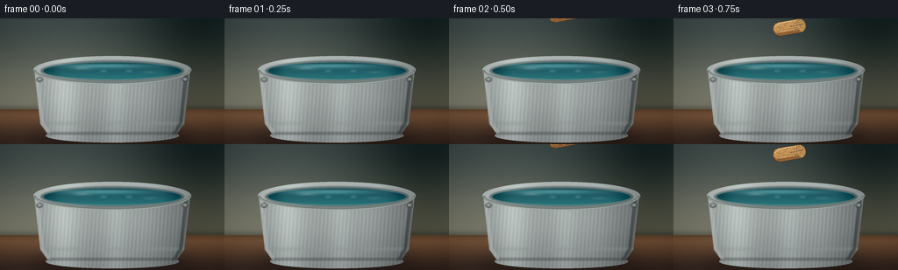
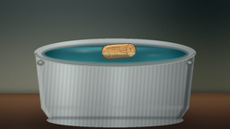
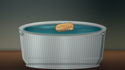
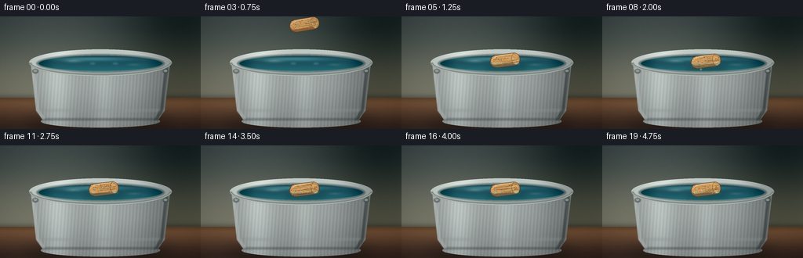
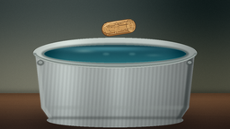
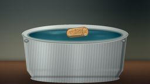
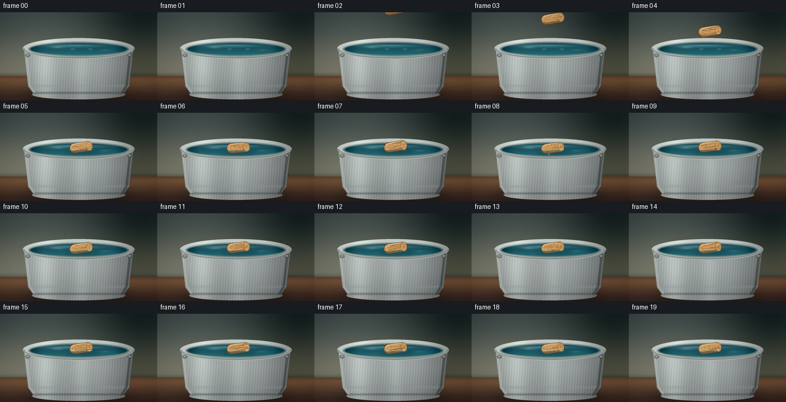

CODING AGENTS AS PIXEL WORLD MODELS
traex/DeepSeek-V4.1-Flash · mechanics_0009
点击播放 · 原生 RGB 像素
逐轮保存的候选
回放视频、检查图与代码变化。
每份候选均可单独播放。实际图片检查记录在下方工具轨迹中。
候选 01播放与检查图
点击播放 · 原生 RGB 像素

展开代码变化
--- 上一保存版本
+++ 本次保存版本
@@ -0,0 +1,456 @@
+from pathlib import Path
+import math
+
+import cv2
+import numpy as np
+from PIL import Image, ImageDraw, ImageFilter
+
+import artifact_io
+
+
+W, H = 256, 144
+SS = 4
+WP, HP = W * SS, H * SS
+FPS = 4
+N_FRAMES = 20
+SEED = 19
+
+
+def color(rgb):
+ return np.asarray(rgb, dtype=np.float32) / 255.0
+
+
+def smoothstep(a, b, value):
+ t = np.clip((value - a) / (b - a), 0.0, 1.0)
+ return t * t * (3.0 - 2.0 * t)
+
+
+def mask_from(draw_fn):
+ image = Image.new("L", (WP, HP), 0)
+ draw_fn(ImageDraw.Draw(image))
+ return np.asarray(image, dtype=np.float32) / 255.0
+
+
+def blur_mask(mask, radius):
+ image = Image.fromarray(np.uint8(np.clip(mask, 0.0, 1.0) * 255.0), "L")
+ image = image.filter(ImageFilter.GaussianBlur(radius))
+ return np.asarray(image, dtype=np.float32) / 255.0
+
+
+def blend(arr, rgb, alpha):
+ alpha = np.asarray(alpha, dtype=np.float32)
+ if alpha.ndim == 2:
+ alpha = alpha[..., None]
+ return arr * (1.0 - alpha) + color(rgb) * alpha
+
+
+def ellipse_mask(box, width=0):
+ return mask_from(lambda d: d.ellipse(tuple(int(v * SS) for v in box), fill=255, width=width))
+
+
+def make_background():
+ yy, xx = np.mgrid[0:HP, 0:WP].astype(np.float32)
+ y = yy / SS
+ x = xx / SS
+
+ wall_top = color((42, 55, 55))
+ wall_bottom = color((102, 103, 88))
+ wall_t = smoothstep(0.0, 104.0, y)[..., None]
+ wall = wall_top * (1.0 - wall_t) + wall_bottom * wall_t
+
+ side_light = np.exp(-((x - 62.0) / 98.0) ** 2) * 0.075
+ side_shadow = np.exp(-((x - 226.0) / 65.0) ** 2) * 0.10
+ wall = wall + side_light[..., None] - side_shadow[..., None]
+
+ table_back = color((112, 77, 50))
+ table_front = color((46, 31, 25))
+ table_t = smoothstep(103.0, 145.0, y)[..., None]
+ table = table_back * (1.0 - table_t) + table_front * table_t
+ table = table + (np.exp(-((x - 86.0) / 120.0) ** 2) * 0.035)[..., None]
+
+ arr = np.where((y < 104.0)[..., None], wall, table)
+
+ horizon = np.exp(-((y - 104.0) / 4.2) ** 2) * 0.22
+ arr = arr * (1.0 - horizon[..., None])
+
+ # Fine plaster and wood grain keep the low-resolution frame from looking flat.
+ rng = np.random.default_rng(SEED)
+ fine = rng.normal(0.0, 0.008, (HP, WP, 1)).astype(np.float32)
+ arr = np.clip(arr + fine, 0.0, 1.0)
+
+ image = Image.fromarray(np.uint8(arr * 255.0), "RGB").convert("RGBA")
+ grain = Image.new("RGBA", (WP, HP), (0, 0, 0, 0))
+ d = ImageDraw.Draw(grain)
+ rng = np.random.default_rng(SEED + 2)
+ for _ in range(34):
+ gy = rng.uniform(105.0, 145.0) * SS
+ x0 = rng.uniform(-30.0, 80.0) * SS
+ length = rng.uniform(110.0, 260.0) * SS
+ bend = rng.uniform(-3.0, 3.0) * SS
+ light = bool(rng.integers(0, 2))
+ rgba = (132, 91, 57, 22) if light else (31, 21, 18, 28)
+ d.line([(x0, gy), (x0 + length * 0.5, gy + bend), (x0 + length, gy - bend * 0.4)],
+ fill=rgba, width=max(1, int(0.55 * SS)))
+ image = Image.alpha_composite(image, grain)
+ return np.asarray(image.convert("RGB"), dtype=np.float32) / 255.0
+
+
+def bucket_body_mask():
+ def draw(d):
+ d.polygon([
+ (39 * SS, 57 * SS),
+ (46 * SS, 120 * SS),
+ (55 * SS, 133 * SS),
+ (69 * SS, 138 * SS),
+ (187 * SS, 138 * SS),
+ (201 * SS, 133 * SS),
+ (210 * SS, 120 * SS),
+ (217 * SS, 57 * SS),
+ ], fill=255)
+ d.ellipse((52 * SS, 126 * SS, 204 * SS, 142 * SS), fill=255)
+
+ return mask_from(draw)
+
+
+def draw_bucket(arr):
+ yy, xx = np.mgrid[0:HP, 0:WP].astype(np.float32)
+ x = xx / SS
+ y = yy / SS
+
+ # A broad, soft shadow anchors the bucket to the tabletop.
+ floor_shadow = ellipse_mask((31, 124, 224, 148))
+ floor_shadow = blur_mask(floor_shadow, 8.0 * SS)
+ arr = blend(arr, (26, 18, 15), floor_shadow * 0.50)
+ wall_shadow = ellipse_mask((54, 51, 214, 141))
+ wall_shadow = blur_mask(wall_shadow, 11.0 * SS)
+ arr = blend(arr, (25, 29, 27), wall_shadow * 0.16)
+
+ body = bucket_body_mask()
+ u = (x - 128.0) / 88.0
+ v = (y - 60.0) / 78.0
+ metallic = 0.77
+ metallic += 0.18 * np.exp(-((u + 0.63) / 0.20) ** 2)
+ metallic += 0.09 * np.exp(-((u - 0.05) / 0.14) ** 2)
+ metallic -= 0.20 * smoothstep(0.30, 1.0, u)
+ metallic -= 0.08 * smoothstep(0.30, 1.0, v)
+ metallic += 0.035 * np.sin((x - 38.0) * 1.45 + y * 0.10)
+ metal_rgb = np.stack([
+ 0.72 * metallic + 0.04,
+ 0.76 * metallic + 0.04,
+ 0.75 * metallic + 0.045,
+ ], axis=-1)
+ arr = arr * (1.0 - body[..., None]) + metal_rgb * body[..., None]
+
+ # Rolled bands and restrained highlights define the bucket's curved wall.
+ band1 = mask_from(lambda d: d.rectangle((0, int(118 * SS), WP, int(122 * SS)), fill=255))
+ band1 *= body
+ band1 = blur_mask(band1, 0.7 * SS)
+ arr = blend(arr, (145, 154, 151), band1 * 0.32)
+ band2 = mask_from(lambda d: d.rectangle((0, int(130 * SS), WP, int(133 * SS)), fill=255))
+ band2 *= body
+ band2 = blur_mask(band2, 0.8 * SS)
+ arr = blend(arr, (46, 52, 51), band2 * 0.38)
+
+ # Left and right rolled edges.
+ left_edge = mask_from(lambda d: d.polygon([
+ (39 * SS, 59 * SS), (46 * SS, 121 * SS), (54 * SS, 132 * SS),
+ (58 * SS, 131 * SS), (50 * SS, 119 * SS), (43 * SS, 58 * SS),
+ ], fill=255))
+ left_edge = blur_mask(left_edge, 0.55 * SS)
+ arr = blend(arr, (196, 205, 201), left_edge * 0.38)
+ right_edge = mask_from(lambda d: d.polygon([
+ (215 * SS, 58 * SS), (208 * SS, 120 * SS), (201 * SS, 132 * SS),
+ (196 * SS, 133 * SS), (204 * SS, 119 * SS), (211 * SS, 58 * SS),
+ ], fill=255))
+ right_edge = blur_mask(right_edge, 0.65 * SS)
+ arr = blend(arr, (39, 47, 47), right_edge * 0.55)
+
+ # Side lugs make the object read as a bucket without adding a busy bail handle.
+ for cx in (45.0, 211.0):
+ lug = ellipse_mask((cx - 4.0, 67.0, cx + 4.0, 73.0))
+ lug = blur_mask(lug, 0.35 * SS)
+ arr = blend(arr, (70, 79, 78), lug * 0.65)
+ lug_hi = ellipse_mask((cx - 2.0, 68.0, cx + 2.0, 71.0))
+ arr = blend(arr, (186, 196, 192), lug_hi * 0.55)
+
+ # Outer top rim.
+ rim_outer = ellipse_mask((38, 43, 218, 75))
+ rim_inner = ellipse_mask((49, 50, 207, 70))
+ rim_ring = np.clip(rim_outer - rim_inner, 0.0, 1.0)
+ rim_u = (x - 128.0) / 90.0
+ rim_light = 0.84 + 0.11 * np.exp(-((rim_u + 0.58) / 0.24) ** 2)
+ rim_light -= 0.17 * smoothstep(0.45, 1.0, rim_u)
+ rim_col = np.stack([
+ 0.72 * rim_light + 0.05,
+ 0.76 * rim_light + 0.055,
+ 0.75 * rim_light + 0.06,
+ ], axis=-1)
+ arr = arr * (1.0 - rim_ring[..., None]) + rim_col * rim_ring[..., None]
+
+ # Dark gap directly inside the metal lip.
+ inner_shadow = np.clip(ellipse_mask((46, 48, 210, 72)) - ellipse_mask((52, 51, 204, 69)), 0, 1)
+ inner_shadow = blur_mask(inner_shadow, 0.75 * SS)
+ arr = blend(arr, (22, 45, 47), inner_shadow * 0.52)
+
+ # Water surface.
+ water = ellipse_mask((49, 50, 207, 70))
+ water_y = (y - 50.0) / 20.0
+ water_x = (x - 128.0) / 79.0
+ water_base = np.stack([
+ 0.075 + 0.075 * water_y,
+ 0.265 + 0.185 * water_y,
+ 0.315 + 0.165 * water_y,
+ ], axis=-1)
+ reflected_sky = np.exp(-((water_y - 0.20) / 0.15) ** 2) * np.exp(-((water_x + 0.12) / 0.64) ** 2)
+ water_base += reflected_sky[..., None] * np.asarray([0.18, 0.25, 0.24], dtype=np.float32)
+ edge_dark = smoothstep(0.68, 1.0, np.abs(water_x)) * 0.10
+ water_base -= edge_dark[..., None]
+ arr = arr * (1.0 - water[..., None]) + water_base * water[..., None]
+
+ # Small reflected highlights on the surface.
+ glint = np.exp(-((water_x + 0.44) / 0.13) ** 2) * np.exp(-((water_y - 0.34) / 0.10) ** 2)
+ glint *= water * 0.32
+ arr = blend(arr, (163, 201, 196), glint)
+ glint2 = np.exp(-((water_x - 0.54) / 0.10) ** 2) * np.exp(-((water_y - 0.58) / 0.08) ** 2)
+ glint2 *= water * 0.16
+ arr = blend(arr, (157, 194, 190), glint2)
+
+ # Front lip sits over the water and gives the rim thickness.
+ front_lip = mask_from(lambda d: d.arc(
+ (38 * SS, 43 * SS, 218 * SS, 75 * SS), start=0, end=180, fill=255, width=int(3.2 * SS)
+ ))
+ front_lip = blur_mask(front_lip, 0.35 * SS)
+ arr = blend(arr, (101, 113, 111), front_lip * 0.82)
+ front_hi = mask_from(lambda d: d.arc(
+ (39 * SS, 43 * SS, 217 * SS, 75 * SS), start=7, end=173, fill=255, width=int(0.8 * SS)
+ ))
+ arr = blend(arr, (220, 228, 223), front_hi * 0.48)
+
+ # Inner meniscus and rim shadow.
+ meniscus = mask_from(lambda d: d.arc(
+ (49 * SS, 50 * SS, 207 * SS, 70 * SS), start=5, end=355, fill=255, width=int(0.9 * SS)
+ ))
+ arr = blend(arr, (151, 190, 187), meniscus * 0.33)
+ lip_shadow = np.exp(-((y - 51.1) / 1.35) ** 2) * water
+ arr = blend(arr, (15, 45, 50), lip_shadow * 0.35)
+ return arr, water
+
+
+def cork_position(frame):
+ if frame <= 5:
+ u = frame / 5.0
+ y = -20.0 + 76.0 * (u ** 1.80)
+ angle = math.radians(12.0 - 4.0 * u)
+ return 132.0, y, angle
+
+ dt = frame - 5
+ bob = 4.8 * math.exp(-0.38 * dt) * math.sin(0.90 * math.pi * dt)
+ y = 56.0 + bob
+ angle = math.radians(8.0 + 5.0 * math.exp(-0.32 * dt) * math.cos(0.82 * math.pi * dt + 0.35))
+ return 132.0, y, angle
+
+
+def make_cork_layer(cx, cy, angle, rng):
+ layer_w, layer_h = 280, 150
+ layer = Image.new("RGBA", (layer_w, layer_h), (0, 0, 0, 0))
+ d = ImageDraw.Draw(layer)
+ left, top, right, bottom = 63, 43, 217, 107
+ d.rounded_rectangle((left, top, right, bottom), radius=32, fill=(181, 132, 76, 255))
+
+ # Dark lower edge and a lighter upper surface.
+ d.rounded_rectangle((left + 2, top + 19, right - 3, bottom - 1), radius=22, fill=(150, 102, 56, 255))
+ d.rounded_rectangle((left + 4, top + 2, right - 5, bottom - 16), radius=25, fill=(199, 151, 91, 255))
+
+ # Right end face, with concentric growth rings.
+ d.ellipse((174, 45, 215, 105), fill=(207, 162, 101, 255), outline=(116, 77, 43, 255), width=2)
+ d.arc((179, 51, 210, 99), 262, 78, fill=(151, 105, 59, 255), width=2)
+ d.arc((184, 58, 205, 92), 266, 74, fill=(164, 117, 68, 255), width=1)
+ d.ellipse((189, 66, 200, 84), fill=(186, 137, 78, 255))
+
+ # Longitudinal grain and pores.
+ for _ in range(19):
+ gy = rng.uniform(top + 9, bottom - 9)
+ gx0 = rng.uniform(left + 12, right - 28)
+ gx1 = min(right - 12, gx0 + rng.uniform(24, 105))
+ shade = rng.choice([(125, 84, 47, 85), (218, 175, 116, 55), (99, 67, 40, 55)])
+ d.line((gx0, gy, gx1, gy + rng.uniform(-2.5, 2.5)), fill=tuple(int(v) for v in shade),
+ width=max(1, int(rng.integers(1, 3))))
+ for _ in range(76):
+ px = rng.uniform(left + 8, right - 9)
+ py = rng.uniform(top + 7, bottom - 7)
+ radius = rng.uniform(0.55, 1.55)
+ shade = rng.choice([(112, 77, 45, 110), (232, 190, 130, 80), (145, 99, 57, 95)])
+ d.ellipse((px - radius, py - radius, px + radius, py + radius), fill=tuple(int(v) for v in shade))
+
+ # Rounded end of the body and its highlight.
+ d.arc((left + 1, top + 1, left + 59, bottom - 1), 95, 265, fill=(105, 70, 42, 255), width=3)
+ d.arc((left + 6, top + 3, right - 22, bottom - 5), 203, 294, fill=(239, 204, 151, 125), width=3)
+ d.line((74, 50, 181, 48), fill=(233, 195, 139, 105), width=3)
+ d.line((71, 97, 180, 101), fill=(95, 64, 39, 85), width=2)
+
+ shape = Image.new("L", (layer_w, layer_h), 0)
+ ImageDraw.Draw(shape).rounded_rectangle((left, top, right, bottom), radius=32, fill=255)
+ layer.putalpha(shape)
+ outline = Image.new("RGBA", (layer_w, layer_h), (0, 0, 0, 0))
+ ImageDraw.Draw(outline).rounded_rectangle((left, top, right, bottom), radius=32,
+ outline=(75, 51, 31, 235), width=2)
+ layer = Image.alpha_composite(layer, outline)
+ layer = layer.rotate(math.degrees(angle), resample=Image.Resampling.BICUBIC, expand=False)
+
+ full = Image.new("RGBA", (WP, HP), (0, 0, 0, 0))
+ px = int(round(cx * SS - layer_w / 2))
+ py = int(round(cy * SS - layer_h / 2))
+ full.alpha_composite(layer, (px, py))
+ return np.asarray(full, dtype=np.float32) / 255.0
+
+
+def draw_ripples(arr, water, frame, cx, surface_y):
+ age = frame - 5
+ if age < 0:
+ return arr
+
+ overlay = Image.new("RGBA", (WP, HP), (0, 0, 0, 0))
+ d = ImageDraw.Draw(overlay)
+ for k in range(3):
+ ring_age = age - k * 0.9
+ if ring_age < 0:
+ continue
+ radius = 7.0 + ring_age * 8.6
+ alpha = int(np.clip(145.0 * math.exp(-ring_age * 0.23), 0.0, 145.0))
+ if alpha < 8:
+ continue
+ box = (
+ (cx - radius) * SS,
+ (surface_y - radius * 0.24) * SS,
+ (cx + radius) * SS,
+ (surface_y + radius * 0.24) * SS,
+ )
+ d.arc(box, 5, 355, fill=(157, 218, 216, alpha), width=max(2, int(0.65 * SS)))
+
+ # A second, darker ring gives the expanding disturbance some volume.
+ if age <= 9:
+ radius = 6.0 + age * 8.6
+ alpha = int(np.clip(78.0 * math.exp(-age * 0.20), 0.0, 78.0))
+ box = (
+ (cx - radius) * SS,
+ (surface_y - radius * 0.24 + 1.2) * SS,
+ (cx + radius) * SS,
+ (surface_y + radius * 0.24 + 1.2) * SS,
+ )
+ d.arc(box, 8, 352, fill=(13, 57, 63, alpha), width=max(2, int(0.8 * SS)))
+
+ overlay = overlay.filter(ImageFilter.GaussianBlur(0.35 * SS))
+ layer = np.asarray(overlay, dtype=np.float32) / 255.0
+ alpha = layer[..., 3:4] * water[..., None]
+ return arr * (1.0 - alpha) + layer[..., :3] * alpha
+
+
+def draw_splash(arr, frame, cx, surface_y):
+ if frame < 5 or frame > 8:
+ return arr
+ rng = np.random.default_rng(SEED + 40)
+ overlay = Image.new("RGBA", (WP, HP), (0, 0, 0, 0))
+ d = ImageDraw.Draw(overlay)
+ counts = {5: 5, 6: 8, 7: 5, 8: 2}
+ for i in range(counts[frame]):
+ theta = rng.uniform(math.pi * 1.06, math.pi * 1.94)
+ speed = rng.uniform(13.0, 27.0)
+ dt = (frame - 5) * 0.25
+ x = cx + math.cos(theta) * speed * dt * rng.uniform(0.7, 1.1)
+ y = surface_y - abs(math.sin(theta)) * speed * dt + 0.5 * 54.0 * dt * dt
+ radius = rng.uniform(0.8, 1.6)
+ alpha = int(np.clip(210 - (frame - 5) * 28, 80, 220))
+ d.ellipse(((x - radius) * SS, (y - radius) * SS, (x + radius) * SS, (y + radius) * SS),
+ fill=(206, 241, 237, alpha))
+ overlay = overlay.filter(ImageFilter.GaussianBlur(0.22 * SS))
+ layer = np.asarray(overlay, dtype=np.float32) / 255.0
+ alpha = layer[..., 3:4]
+ return arr * (1.0 - alpha) + layer[..., :3] * alpha
+
+
+def draw_cork(arr, water, frame, rng):
+ cx, cy, angle = cork_position(frame)
+ cork = make_cork_layer(cx, cy, angle, rng)
+ alpha = cork[..., 3:4]
+
+ # Soft contact shadow on the water.
+ contact = ellipse_mask((cx - 27, cy + 4, cx + 29, cy + 15))
+ contact = blur_mask(contact, 3.2 * SS)
+ arr = blend(arr, (13, 45, 49), contact * water * 0.32)
+
+ arr = arr * (1.0 - alpha) + cork[..., :3] * alpha
+
+ yy = np.mgrid[0:HP, 0:WP][0].astype(np.float32) / SS
+ waterline = 59.8 - 0.010 * (cx - 132.0)
+ submerged = alpha[..., 0] * smoothstep(waterline - 0.3, waterline + 2.0, yy)
+ arr = blend(arr, (40, 92, 94), submerged * 0.25)
+
+ line_alpha = alpha[..., 0] * np.exp(-((yy - waterline) / 0.70) ** 2)
+ arr = blend(arr, (168, 218, 211), line_alpha * 0.40)
+
+ # Small meniscus highlights at the two contact edges.
+ for dx in (-14.0, 15.0):
+ glint = ellipse_mask((cx + dx - 3.5, waterline - 0.8, cx + dx + 3.5, waterline + 1.5))
+ glint = blur_mask(glint, 0.8 * SS)
+ arr = blend(arr, (188, 231, 222), glint * 0.20)
+ return arr
+
+
+def finish_frame(arr, frame):
+ yy, xx = np.mgrid[0:HP, 0:WP].astype(np.float32)
+ x = xx / WP
+ y = yy / HP
+
+ # Subtle lens vignette and warm key light from upper-left.
+ vignette = 1.0 - 0.16 * (((x - 0.5) / 0.72) ** 2 + ((y - 0.48) / 0.78) ** 2)
+ vignette = np.clip(vignette, 0.80, 1.0)
+ arr = arr * vignette[..., None]
+ warm = np.exp(-(((x - 0.23) / 0.52) ** 2 + ((y - 0.18) / 0.62) ** 2))
+ arr = arr + warm[..., None] * np.asarray([0.020, 0.014, 0.006], dtype=np.float32)
+
+ rng = np.random.default_rng(SEED + 300 + frame)
+ grain = rng.normal(0.0, 0.006, (HP, WP, 1)).astype(np.float32)
+ arr = np.clip(arr + grain, 0.0, 1.0)
+
+ image = Image.fromarray(np.uint8(np.clip(arr, 0.0, 1.0) * 255.0 + 0.5), "RGB")
+ image = image.resize((W, H), Image.Resampling.LANCZOS)
+ return np.asarray(image, dtype=np.uint8)
+
+
+def render():
+ background = make_background()
+ frames = []
+ for frame in range(N_FRAMES):
+ rng = np.random.default_rng(SEED + 1000 + frame)
+ arr, water = draw_bucket(background.copy())
+ arr = draw_ripples(arr, water, frame, 132.0, 59.8)
+ arr = draw_splash(arr, frame, 132.0, 59.8)
+ arr = draw_cork(arr, water, frame, rng)
+ frames.append(finish_frame(arr, frame))
+ return np.asarray(frames, dtype=np.uint8)
+
+
+def main():
+ case_dir = Path(__file__).resolve().parent
+ frames = render()
+ artifact_io.save(frames, case_dir)
+
+ video_path = case_dir / "output.mp4"
+ writer = cv2.VideoWriter(
+ str(video_path),
+ cv2.VideoWriter_fourcc(*"mp4v"),
+ FPS,
+ (W, H),
+ )
+ if not writer.isOpened():
+ raise RuntimeError("Could not open MP4 writer")
+ for frame in frames:
+ writer.write(cv2.cvtColor(frame, cv2.COLOR_RGB2BGR))
+ writer.release()
+
+ print(f"Rendered {len(frames)} frames: {frames.shape}, {frames.dtype}")
+ print(f"Output: {video_path}")
+
+
+if __name__ == "__main__":
+ main()
候选 02播放与检查图
点击播放 · 原生 RGB 像素


展开代码变化
--- 上一保存版本
+++ 本次保存版本
@@ -32,7 +32,7 @@
def blur_mask(mask, radius):
- image = Image.fromarray(np.uint8(np.clip(mask, 0.0, 1.0) * 255.0), "L")
+ image = Image.fromarray(np.uint8(np.clip(mask, 0.0, 1.0) * 255.0))
image = image.filter(ImageFilter.GaussianBlur(radius))
return np.asarray(image, dtype=np.float32) / 255.0
@@ -78,7 +78,7 @@
fine = rng.normal(0.0, 0.008, (HP, WP, 1)).astype(np.float32)
arr = np.clip(arr + fine, 0.0, 1.0)
- image = Image.fromarray(np.uint8(arr * 255.0), "RGB").convert("RGBA")
+ image = Image.fromarray(np.uint8(arr * 255.0)).convert("RGBA")
grain = Image.new("RGBA", (WP, HP), (0, 0, 0, 0))
d = ImageDraw.Draw(grain)
rng = np.random.default_rng(SEED + 2)
@@ -174,16 +174,16 @@
arr = blend(arr, (186, 196, 192), lug_hi * 0.55)
# Outer top rim.
- rim_outer = ellipse_mask((38, 43, 218, 75))
+ rim_outer = ellipse_mask((37, 42, 219, 76))
rim_inner = ellipse_mask((49, 50, 207, 70))
rim_ring = np.clip(rim_outer - rim_inner, 0.0, 1.0)
rim_u = (x - 128.0) / 90.0
- rim_light = 0.84 + 0.11 * np.exp(-((rim_u + 0.58) / 0.24) ** 2)
- rim_light -= 0.17 * smoothstep(0.45, 1.0, rim_u)
+ rim_light = 0.88 + 0.13 * np.exp(-((rim_u + 0.58) / 0.24) ** 2)
+ rim_light -= 0.20 * smoothstep(0.45, 1.0, rim_u)
rim_col = np.stack([
- 0.72 * rim_light + 0.05,
- 0.76 * rim_light + 0.055,
- 0.75 * rim_light + 0.06,
+ 0.78 * rim_light + 0.05,
+ 0.82 * rim_light + 0.055,
+ 0.80 * rim_light + 0.06,
], axis=-1)
arr = arr * (1.0 - rim_ring[..., None]) + rim_col * rim_ring[..., None]
@@ -197,12 +197,12 @@
water_y = (y - 50.0) / 20.0
water_x = (x - 128.0) / 79.0
water_base = np.stack([
- 0.075 + 0.075 * water_y,
- 0.265 + 0.185 * water_y,
- 0.315 + 0.165 * water_y,
+ 0.052 + 0.070 * water_y,
+ 0.225 + 0.180 * water_y,
+ 0.285 + 0.165 * water_y,
], axis=-1)
reflected_sky = np.exp(-((water_y - 0.20) / 0.15) ** 2) * np.exp(-((water_x + 0.12) / 0.64) ** 2)
- water_base += reflected_sky[..., None] * np.asarray([0.18, 0.25, 0.24], dtype=np.float32)
+ water_base += reflected_sky[..., None] * np.asarray([0.15, 0.22, 0.22], dtype=np.float32)
edge_dark = smoothstep(0.68, 1.0, np.abs(water_x)) * 0.10
water_base -= edge_dark[..., None]
arr = arr * (1.0 - water[..., None]) + water_base * water[..., None]
@@ -217,20 +217,20 @@
# Front lip sits over the water and gives the rim thickness.
front_lip = mask_from(lambda d: d.arc(
- (38 * SS, 43 * SS, 218 * SS, 75 * SS), start=0, end=180, fill=255, width=int(3.2 * SS)
+ (37 * SS, 42 * SS, 219 * SS, 76 * SS), start=0, end=180, fill=255, width=int(3.4 * SS)
))
front_lip = blur_mask(front_lip, 0.35 * SS)
- arr = blend(arr, (101, 113, 111), front_lip * 0.82)
+ arr = blend(arr, (116, 129, 126), front_lip * 0.86)
front_hi = mask_from(lambda d: d.arc(
- (39 * SS, 43 * SS, 217 * SS, 75 * SS), start=7, end=173, fill=255, width=int(0.8 * SS)
+ (38 * SS, 42 * SS, 218 * SS, 76 * SS), start=7, end=173, fill=255, width=int(0.8 * SS)
))
- arr = blend(arr, (220, 228, 223), front_hi * 0.48)
+ arr = blend(arr, (232, 238, 232), front_hi * 0.54)
# Inner meniscus and rim shadow.
meniscus = mask_from(lambda d: d.arc(
(49 * SS, 50 * SS, 207 * SS, 70 * SS), start=5, end=355, fill=255, width=int(0.9 * SS)
))
- arr = blend(arr, (151, 190, 187), meniscus * 0.33)
+ arr = blend(arr, (132, 177, 175), meniscus * 0.28)
lip_shadow = np.exp(-((y - 51.1) / 1.35) ** 2) * water
arr = blend(arr, (15, 45, 50), lip_shadow * 0.35)
return arr, water
@@ -315,8 +315,8 @@
ring_age = age - k * 0.9
if ring_age < 0:
continue
- radius = 7.0 + ring_age * 8.6
- alpha = int(np.clip(145.0 * math.exp(-ring_age * 0.23), 0.0, 145.0))
+ radius = 7.0 + ring_age * 7.2
+ alpha = int(np.clip(124.0 * math.exp(-ring_age * 0.24), 0.0, 124.0))
if alpha < 8:
continue
box = (
@@ -325,11 +325,11 @@
(cx + radius) * SS,
(surface_y + radius * 0.24) * SS,
)
- d.arc(box, 5, 355, fill=(157, 218, 216, alpha), width=max(2, int(0.65 * SS)))
+ d.arc(box, 5, 355, fill=(142, 204, 202, alpha), width=max(2, int(0.60 * SS)))
# A second, darker ring gives the expanding disturbance some volume.
if age <= 9:
- radius = 6.0 + age * 8.6
+ radius = 6.0 + age * 7.2
alpha = int(np.clip(78.0 * math.exp(-age * 0.20), 0.0, 78.0))
box = (
(cx - radius) * SS,
@@ -385,8 +385,8 @@
submerged = alpha[..., 0] * smoothstep(waterline - 0.3, waterline + 2.0, yy)
arr = blend(arr, (40, 92, 94), submerged * 0.25)
- line_alpha = alpha[..., 0] * np.exp(-((yy - waterline) / 0.70) ** 2)
- arr = blend(arr, (168, 218, 211), line_alpha * 0.40)
+ line_alpha = alpha[..., 0] * np.exp(-((yy - waterline) / 0.58) ** 2)
+ arr = blend(arr, (143, 197, 191), line_alpha * 0.28)
# Small meniscus highlights at the two contact edges.
for dx in (-14.0, 15.0):
@@ -412,7 +412,7 @@
grain = rng.normal(0.0, 0.006, (HP, WP, 1)).astype(np.float32)
arr = np.clip(arr + grain, 0.0, 1.0)
- image = Image.fromarray(np.uint8(np.clip(arr, 0.0, 1.0) * 255.0 + 0.5), "RGB")
+ image = Image.fromarray(np.uint8(np.clip(arr, 0.0, 1.0) * 255.0 + 0.5))
image = image.resize((W, H), Image.Resampling.LANCZOS)
return np.asarray(image, dtype=np.uint8)
可观测工具轨迹
实际执行的命令与返回图片。
命令 1exit 0
/bin/bash -c "pwd && rg --files -g '"'!*.mp4'"' -g '"'!*.mov'"' | sort | head -200"
命令 2exit 0
/bin/bash -c "sed -n '1,240p' prompt.txt"
命令 3exit 0
/bin/bash -c "sed -n '1,260p' GENERATION_RULES.md"
命令 4exit 0
/bin/bash -c 'cat task_spec.json'
命令 5exit 0
/bin/bash -c "sed -n '1,260p' artifact_io.py"
命令 6exit 0
/bin/bash -c "sed -n '1,260p' player_template.html"
命令 7exit 0
/bin/bash -c "python - <<'PY' import importlib.util for m in ['numpy','PIL','cv2','scipy','imageio','matplotlib']: print(m, bool(importlib.util.find_spec(m))) PY"
命令 8exit 0
/bin/bash -c "find . -maxdepth 2 -type f -printf '%p %s bytes\\n' | sort"
命令 9exit 0
/bin/bash -c "command -v ffmpeg || true; python - <<'PY'
import cv2
print('opencv', cv2.__version__)
PY"命令 10exit 0
/bin/bash -c 'python generate.py'
命令 11exit 1
/bin/bash -c "python - <<'PY' import generate, numpy as np for f in [0,5,19]: rng=np.random.default_rng(1); cx,cy,a=generate.cork_position(f); c=generate.make_cork_layer(cx,cy,a,rng) ys,xs=np.where(c[...,3]>.5) print(f,cx,cy,a,(xs.min(),ys.min(),xs.max(),ys.max()),'target',(xs.max()-xs.min())/4,(ys.max()-ys.min())/4) PY"
命令 12exit 1
/bin/bash -c "python - <<'PY' import generate, numpy as np for f in [0,5,19]: rng=np.random.default_rng(1); cx,cy,a=generate.cork_position(f); c=generate.make_cork_layer(cx,cy,a,rng) ys,xs=np.where(c[...,3]>.2) print(f,cx,cy,a,(xs.min(),ys.min(),xs.max(),ys.max()),'target',(xs.max()-xs.min())/4,(ys.max()-ys.min())/4) PY"
命令 13exit 0
/bin/bash -c "python - <<'PY' import generate, numpy as np rng=np.random.default_rng(1) for f in [5,19]: cx,cy,a=generate.cork_position(f); c=generate.make_cork_layer(cx,cy,a,rng) print(f,c.shape,c[...,3].min(),c[...,3].max(),np.unique(c[...,3])[-10:]) PY"
命令 14exit 0
/bin/bash -c 'mkdir -p candidates/candidate_01 && cp -r frames inspection.png transition_check.png pixels.npz index.html output.mp4 candidates/candidate_01/'
命令 15exit 0
/bin/bash -c 'ffprobe -v error -show_entries format=duration,size:stream=codec_name,width,height,r_frame_rate,nb_frames,pix_fmt -of default=noprint_wrappers=1 output.mp4 2>/dev/null || true'
命令 16exit 0
/bin/bash -c "python - <<'PY'
import cv2
cap=cv2.VideoCapture('output.mp4')
print('opened',cap.isOpened(),'frames',int(cap.get(cv2.CAP_PROP_FRAME_COUNT)),'fps',cap.get(cv2.CAP_PROP_FPS),'size',cap.get(cv2.CAP_PROP_FRAME_WIDTH),cap.get(cv2.CAP_PROP_FRAME_HEIGHT))
print('codec',cap.get(cv2.CAP_PROP_FOURCC))
PY"命令 17exit 0
/bin/bash -c "python - <<'PY' print(int.from_bytes(b'mp4v','little')) PY"
命令 18exit 0
/bin/bash -c "python - <<'PY'
import cv2
print('mp4v',cv2.VideoWriter_fourcc(*'mp4v'),'avc1',cv2.VideoWriter_fourcc(*'avc1'),'H264',cv2.VideoWriter_fourcc(*'H264'))
PY"命令 19exit 0
/bin/bash -c 'python generate.py'
命令 20exit 0
/bin/bash -c "python - <<'PY'
from pathlib import Path
from PIL import Image, ImageDraw
import numpy as np
p=Path('frames'); files=sorted(p.glob('*.png'))
sheet=Image.new('RGB',(256*5, (144+20)*4),(24,27,31)); d=ImageDraw.Draw(sheet)
for i,f in enumerate(files):
im=Image.open(f).convert('RGB')
x=(i%5)*256; y=(i//5)*164
d.text((x+5,y+3),f'frame {i:02d}',fill='white')
sheet.paste(im,(x,y+20))
sheet.save('all_frames.png')
print('saved',len(files))
PY"命令 21exit 0
/bin/bash -c "python - <<'PY'
import numpy as np
from PIL import Image
from pathlib import Path
frames=np.stack([np.asarray(Image.open(p).convert('RGB'),dtype=np.int16) for p in sorted(Path('frames').glob('*.png'))])
d=np.abs(np.diff(frames,axis=0))
print('shape',frames.shape,'dtype',frames.dtype)
print('temporal mean abs diff by pair:',np.round(d.mean(axis=(1,2,3)),2).tolist())
print('frame means:',np.round(frames.mean(axis=(1,2,3)),2).tolist())
PY"命令 22exit 0
/bin/bash -c 'mkdir -p candidates/candidate_02 && cp -r frames inspection.png transition_check.png all_frames.png pixels.npz index.html output.mp4 candidates/candidate_02/'
命令 23exit 0
/bin/bash -c "python - <<'PY'
from pathlib import Path
import json
import numpy as np
from PIL import Image
import cv2
spec=json.loads(Path('task_spec.json').read_text())
files=sorted(Path('frames').glob('*.png'))
assert len(files)==spec['frames'], len(files)
frames=[]
for p in files:
a=np.asarray(Image.open(p).convert('RGB'))
assert a.shape==(spec['height'],spec['width'],3), (p,a.shape)
frames.append(a)
frames=np.stack(frames)
with np.load('pixels.npz') as z:
assert z['pixels'].shape==(spec['height'],spec['width'],spec['frames']), z['pixels'].shape
cap=cv2.VideoCapture('output.mp4')
assert cap.isOpened()
assert int(cap.get(cv2.CAP_PROP_FRAME_COUNT))==spec['frames']
assert int(cap.get(cv2.CAP_PROP_FRAME_WIDTH))==spec['width']
assert int(cap.get(cv2.CAP_PROP_FRAME_HEIGHT))==spec['height']
assert abs(cap.get(cv2.CAP_PROP_FPS)-spec['fps'])<1e-6
cap.release()
print('validated',frames.shape,frames.dtype,'mp4',Path('output.mp4').stat().st_size,'bytes','html',Path('index.html').stat().st_size,'bytes')
PY
find . -maxdepth 2 -type f -printf '%p %s bytes\\n' | sort | head -50"命令 24exit 0
/bin/bash -c "python - <<'PY'
import cv2, numpy as np
from pathlib import Path
from PIL import Image
cap=cv2.VideoCapture('output.mp4'); decoded=[]
while True:
ok,a=cap.read()
if not ok: break
decoded.append(cv2.cvtColor(a,cv2.COLOR_BGR2RGB))
cap.release()
decoded=np.stack(decoded)
saved=np.stack([np.asarray(Image.open(p).convert('RGB')) for p in sorted(Path('frames').glob('*.png'))])
print('decoded',decoded.shape,'mean abs error',round(float(np.abs(decoded.astype(float)-saved).mean()),3),'max',int(np.abs(decoded.astype(int)-saved).max()))
PY"视觉工具实际返回图片 1

视觉工具实际返回图片 2

视觉工具实际返回图片 3
视觉工具实际返回图片 4

视觉工具实际返回图片 5

视觉工具实际返回图片 6

视觉工具实际返回图片 7

视觉工具实际返回图片 8
视觉工具实际返回图片 9

视觉工具实际返回图片 10

保存候选 2 份；完成命令 24 次；可验证图片返回 10 张。原始 API 响应与完整日志保留在本地。